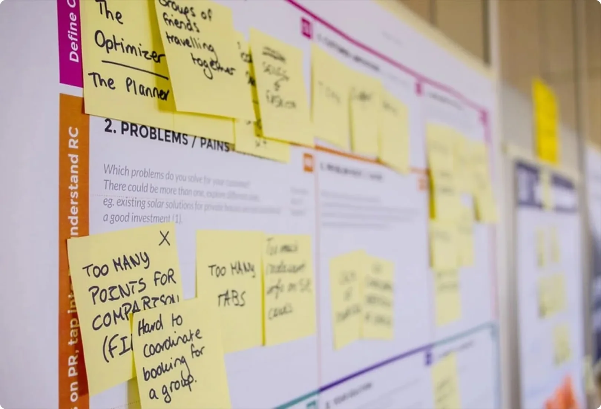
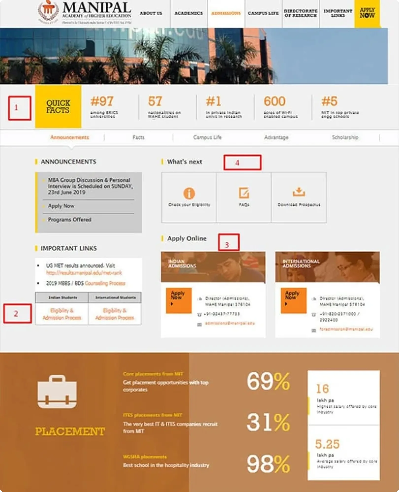
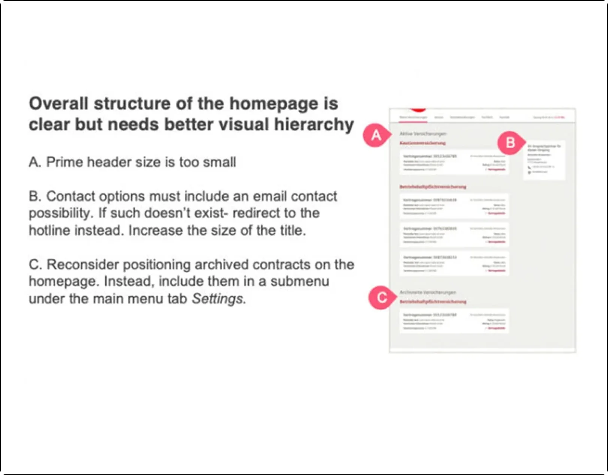
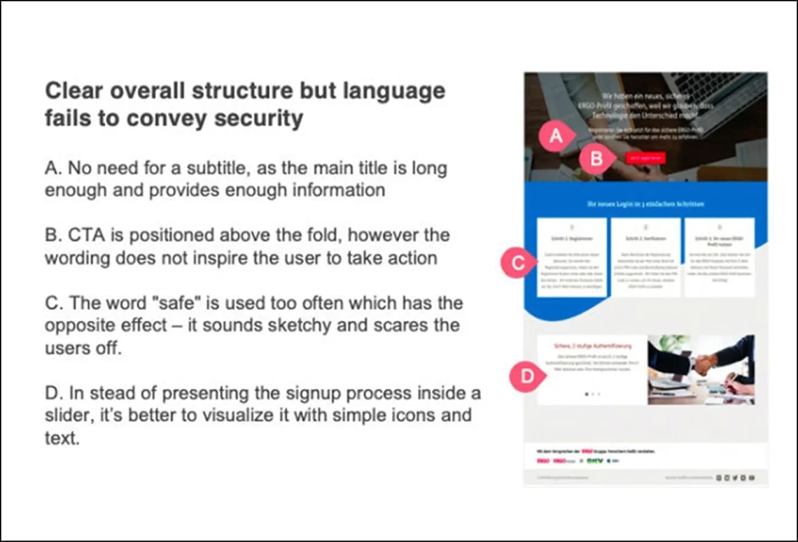

A UX designer is not a content strategist. A content strategist is not a UX designer. However, without the context of the content, the designs would be less meaningful and most probably will fail to provide solutions to user concerns associated.
Any digital product or service is merely a channel for communicating the content. Designs without the understanding of the content are internally void and showcase the lack of product or service’s value.
You do not visit a website just because it looks attractive; you visit for the content. Content helps design communicate, in a way, it complements the design. Hence, designs without content are a work of fabrication. The need for design across any industry is to solve problems through fundamental ways. Design compositions help the narrative of your content by providing context, intent, and generating trust. In-Short it brings life to your content.
From the UX perspective, content strategy deviates a little from its actual definition. Here, content strategy acts as a catalyst for system design. In a way, it is a process of using data and research evidence to provide the audience with the content they need, in a way they expect at the time they need.
In this guide, we’ll attempt to familiarize all the UXers by exploring the convergence of design and content strategy in UX Design. We’ll go through on how to include a content-first approach to mainstream UX designing techniques leading to the creation of better User Experience.
Now we know that content strategy could impact many aspects of user experience. Content strategy is effective in any initiation that requires content creation, delivery, and planning. The motive for content creation could be anything from marketing, branding and to what we’ve been discussing here- to build a better user experience.
We’ll go through some of the practices which involve the active influence of content in creating a better UX for the audience.
Setting The Content
A UX designer is not a content strategist. A content strategist is not a UX designer. However, without the context of the content, the designs would be less meaningful and most probably will fail to provide solutions to user concerns associated.

Competitor Analysis
Identify a list of 4-5 competitors and analyze their respective pages. Find what content methods are they using to achieve the result. Maybe, frame predefined questions which can help in such situations.
Questions like:
- What language and labels do they use?
- How specific is their content?
- What content elements do they include? Videos? Audios?
- What content mediums are they using and how?
- What’s the tone of their voice?
- What content do they leave out?
Here’s an example of an educational institute’s admission page

A few competitive UX insights gathered from Manipal University’s home page:
- Manipal has used up some space to cover facts about their institute. It is a small form of branding. Does the client require anything similar?
- They’ve different admission process and eligibility criteria for Indian and International students. Is it the same for the client?
- Manipal has provided the option to apply online, along with that it also includes contact information of respective personnel/committee based on the student’s nationality. Is the client taking an application online? If yes, where does it exists in the current version?
- They’ve added a FAQs sections along with the eligibility check and an option to download the brochure. Is there a need to include FAQs? Does the client have a soft version of their prospectus brochure?
This is just a small example; you could scrutinize competitors page much and juice out further more insights. Also, do not limit to one, do the same process for at least four other competitors.
UX Audit
UX Audit is an audit of one’s own brand or website to compare it with competitors and understand what is lacking or what more can be added in terms of content.
A UX team uses a combination of qualitative and quantitative techniques, skills, and tools to consolidate, study, and investigate user interactions. Through analytical methods, potential issues and triggers get discovered, which later go through usability testing. Eventually, recommendations and suggestions based on the findings are made.
Few of the techniques and tools used in UX Audit process
- Heat Map Analysis- It helps auditors to visualize those spaces on the webpages or app screens where users happened to clicked the most or provided some form of input.
- SWOT- It’s a descriptive method that organizations use to identify strengths, weaknesses, opportunities, and threats of the project (design).
- Funnel Analysis- Somewhat extended version of user flows, explained above. The series of the event towards the goal gets analyzed in the process.
- Session Log Reviewing- Session Logs allow company representatives to track user activities through their logged-in sessions on websites or apps.
- Acquisition-Behavior- Conversion Rate- Tracking and analytical tools such as GA, allow the websites and applications to these rates, which provide a lot of insights to the businesses.
- Surveys & Polls- Pretty much self-explanatory, reviews and polls help businesses to collect information in form opinions and answers directly through the consumer.
Here’s a sample of UX Audit done by Iglika, a UX/UI designer for one of her clients, this will help you understand the process from a practical perspective.
This image includes screenshots of the existing web pages. Here, she has marked points on the image and defined what according to the audit is not working for their website and possibly the reason for their high audience bounce rate.


Such an actionable UX/UI audit of their website gave us insights on the pain points that were causing the hindrance to their website’s active user engagement and objectives, which in turn affected Client’s conversion rates and other end goals.
Mapping User Flows
Start mapping user flows concerning the stories developed from defining content in the first step. This activity will reveal the actions and critical interface points that users interact with while they’re on the site/app.
Consider where the user arrives from, which steps they take after visiting, giving you more insight and context into user behavior.
To achieve this, you could use the help of Google Analytics
It can be found under the Audience section in the side panel.
Conclusion
The user experience you created succeeds based on the fact of how well you facilitated the delivery of the content through your design. The importance of content-first thinking in designing has been growing, and the curve is taking its slide into UX Design.
If you’re someone who thinks that either of content strategy or UX design is more important than the other, then for the self-evident reasons you might be on the wrong path. The synergy between the two is much more crucial than the individuality they possess. An effort towards a collaborative goal will yield much better results.
The new perception of UX Design is generalized towards interfaces of websites and mobile apps. However, UX is much broader, but there’s always a user at the end of the tunnel, so, a UX Designer must be aware of how people consume content and what channels they use for it. Including responses and inputs from the users provides insightful details into developing a defined content strategy.
Of course, the above process won’t guarantee the most articulate designs, but merely adding some new techniques and a content strategist’s perspective to your UX design process could make a lot of difference.
UXTeam is known for its UX strategy and helped several startups to build their product from the ground up. If you’re struggling with digital product design or UX/UI design, get in touch with us. UXTeam has been selected among the UI/UX Design Agencies by Designrush.